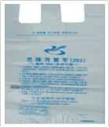
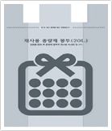

일반 쓰레기 봉투
-분리수거가 불가능한 타는 쓰레기를 버릴 때 사용
-아무리봐도 사료로 못 쓸 것 같은 음식물 쓰레기는 일반 쓰레기로 버린다.

재사용 쓰레기 봉투
-사람들이 쇼핑백처럼 이용할 수 있도록 만든 봉투
-일반 쓰레기 봉투와 용도가 같음

음식물 쓰레기 봉투
-음식물 쓰레기를 버릴때 이용한다.

불연성 봉투(매립용 쓰레기)
-생활 폐기물 중에서 깨진 그릇 등 불타지 않는 쓰레기를 버릴때 사용
-인간 쓰레기를 버릴 때 사용될지도
-유리, 도자기 등을 버릴 때 사용한다.

가정 사업계 쓰레기 봉투
-신발, 가죽, 이불, 폐벽지등을 버릴 때 사용
-이사갈 때 하나씩 사게 되는 쓰레기 봉투
-집 앞에 배출 후 1~2개는 동사무소에, 3개 이상은 수거업체에 연락(봉투 앞 연락처)